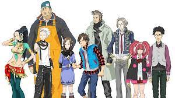
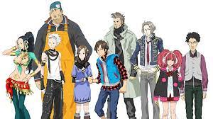

Plot Introduction to 9 Persons, 9 Hours, 9 Doors
Nine Hours, Nine Persons, Nine Doors features nine main characters, who are forced to participate in the Nonary Game by an unknown person named Zero. The characters adopt code names to protect their identities due to the stakes of the Nonary Game. The player-controlled Junpei is joined by June, a nervous girl and an old friend of Junpei whom he knows as Akane; Lotus, a self-serving woman with unknown skills; Seven, a large and muscular man; Santa, a punk with a negative attitude; Ace, an older and wiser man; Snake, a blind man with a princely demeanor; Clover, a girl prone to mood swings and Snake's younger sister; and the 9th Man, a fidgety individual. The events of the game occur within a cruise ship, though all of the external doors and windows have been sealed, and many of the internal doors are locked. The game's nine characters learn that they have been kidnapped and brought to the ship to play the Nonary Game, with the challenge to find the door marked with a "9" within nine hours before the ship sinks. To do this, they are forced to work in separate teams to make their way through the ship and solve puzzles to find this door. This is set in part by special locks on numbered doors that are based on digital roots; each player has a bracelet with a different digit on it, and only groups of three to five with the total of their bracelet's number with the same digital root as marked on the door can pass through.
 
